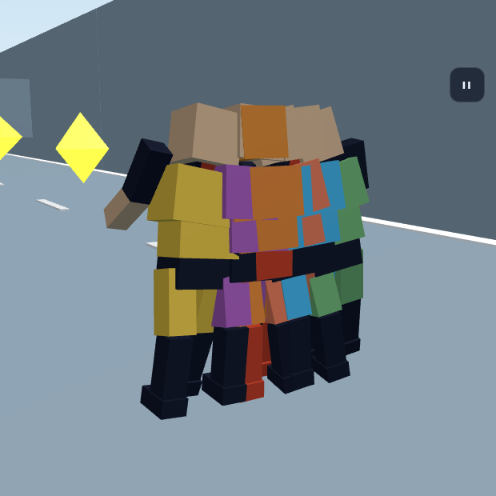
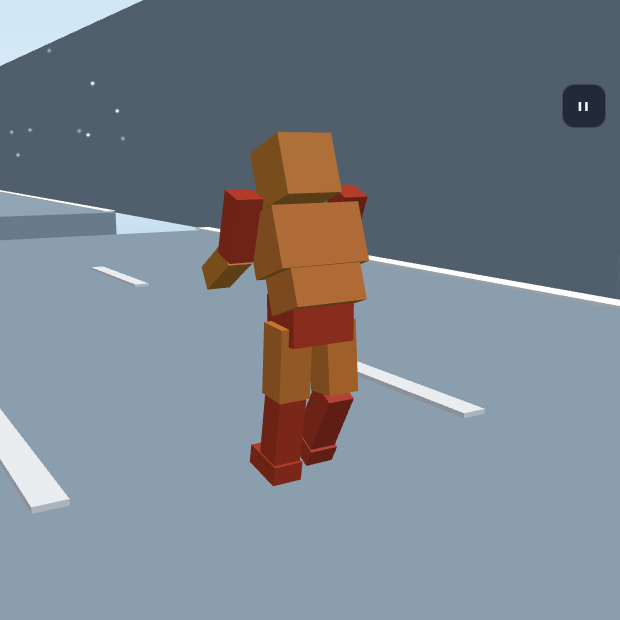
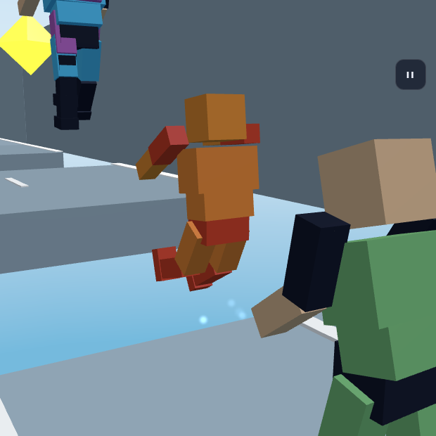
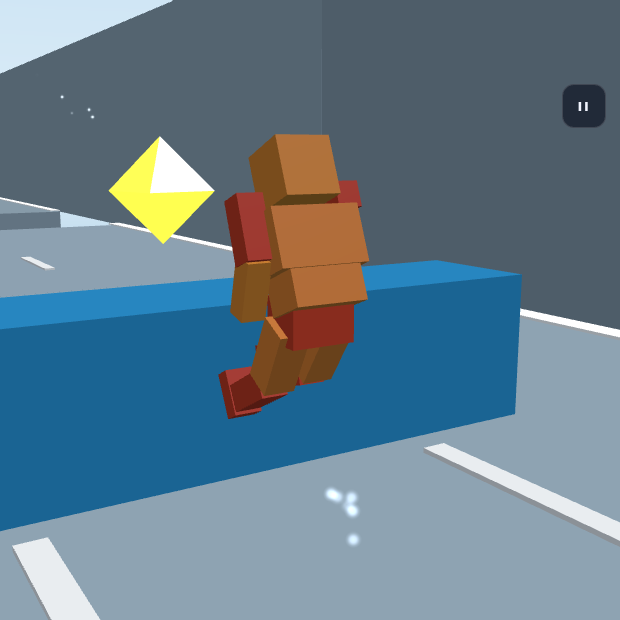
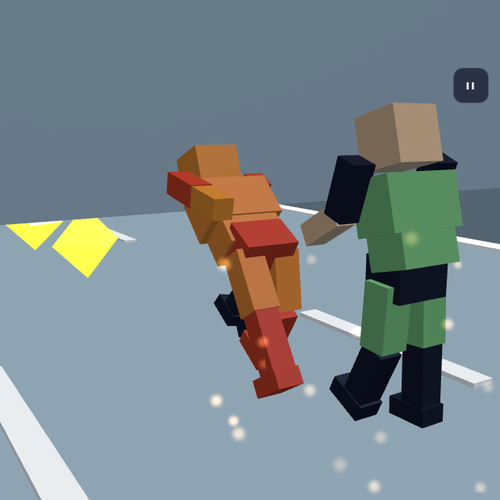
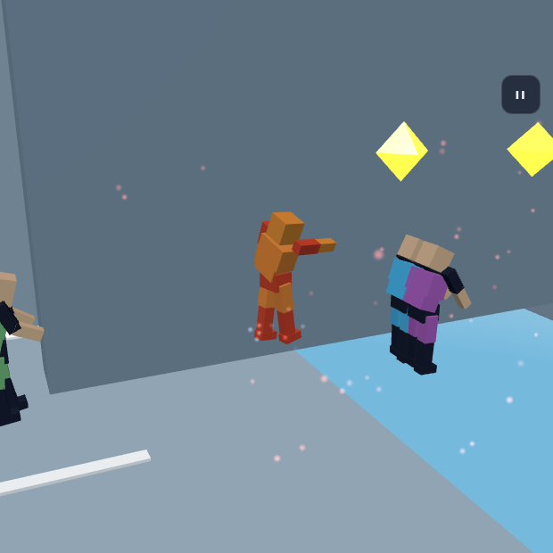
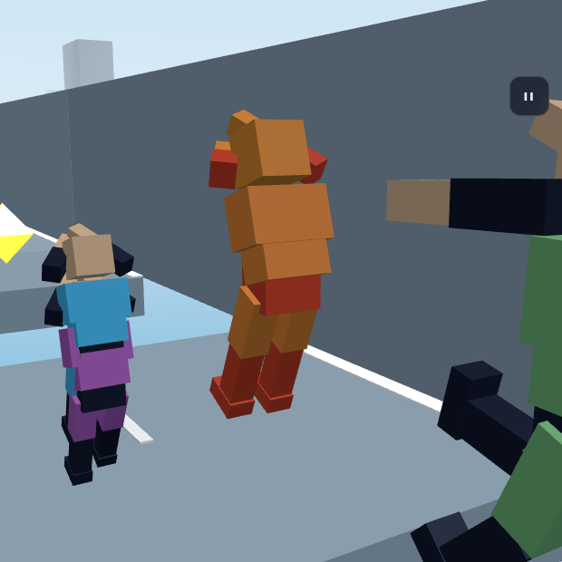
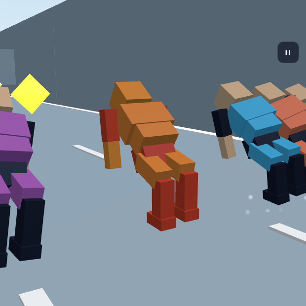
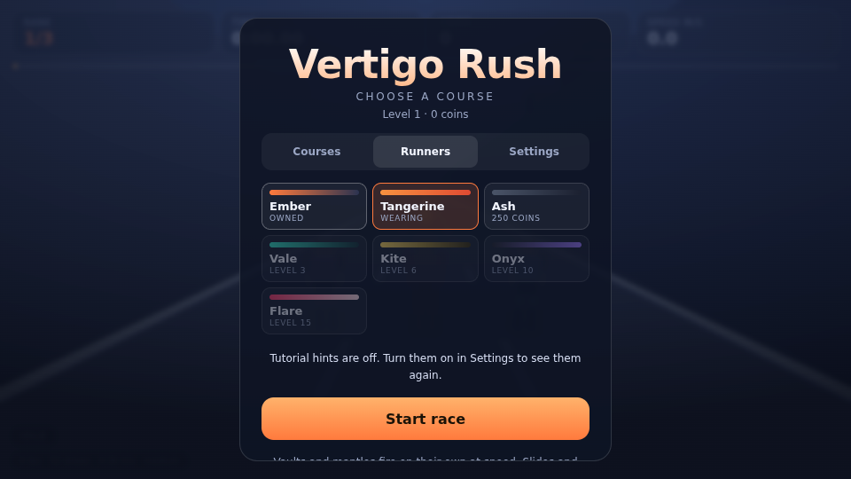
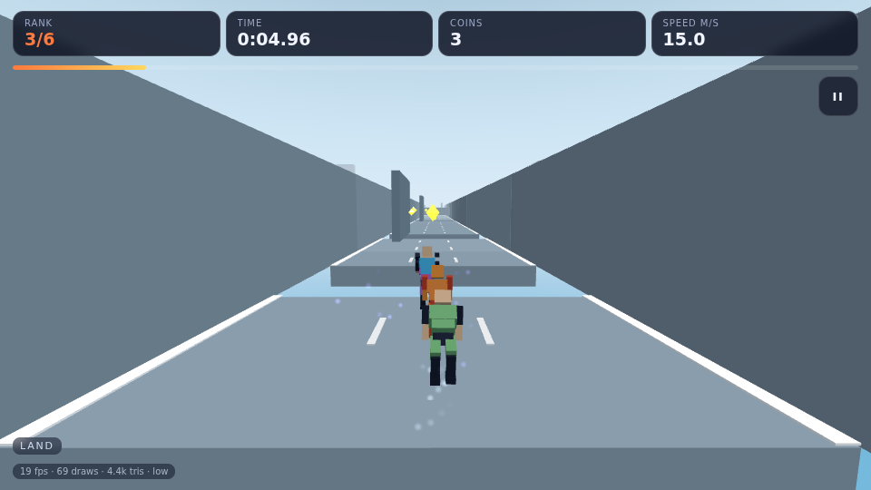

The blocky avatar from the reference sheet, added to Vertigo Rush as a playable runner and turned loose on Whiteout — driven by the game's own opponent AI, not by a scripted sequence of keypresses.
A full course, start to finish. Rendered headlessly on a software GPU, so the capture runs around 18 fps — the simulation itself is fixed-step and unaffected.










| State | Frames observed | What it is |
|---|---|---|
| sprint | 559 | Held top speed for most of the course |
| fall | 76 | Airborne |
| run | 72 | Below sprint threshold |
| slide | 54 | Under low cover |
| idle | 39 | Pre-countdown |
| jump | 32 | Launches |
| land | 31 | Touchdowns |
| wallrun | 23 | Along a vertical face |
| vault | 11 | Over crates |
| stumble | 4 | Clipped something — the AI is not perfect |
Sampled once per rendered frame over one complete run, which the racer finished.
Nothing about the runner is privileged — an opponent fills in the same intent
object a thumb would, and is advanced by the same stepRacer. So the demo hands the
player to makeAI / thinkAI and lets the game play itself:
session.input = null, then session.intent becomes a getter
returning thinkAI(ai, world). Each still is captured by pausing the simulation the
instant a wanted state first appears, swinging the simulation camera in close, and
letting the render loop sync three.js from it.